Mason jars have no business being this versatile. You buy one for storing something in the kitchen, and suddenly you're looking at it thinking, "Could this become a vase?" That little thought can lead to some surprisingly pretty Mason jar decor ideas.
I've always liked decorating with pieces that serve a purpose instead of simply sitting around looking pretty. Mason jars fit that perfectly. They work as vases, organizers, candle holders, planters, centerpieces, and even small decorative displays.
And the best part? You don't need a huge DIY budget or a garage full of crafting supplies.
So, if you have a few jars hiding in a cabinet, don't toss them into the recycling bin just yet. Let's turn them into something your home can actually use.

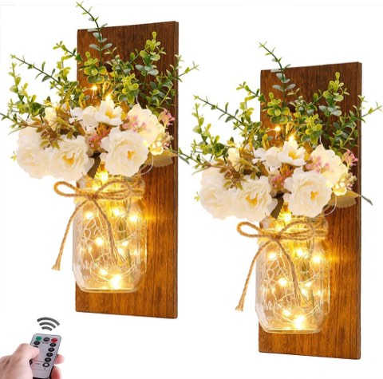
Rustic Wall Sconces Mason Jar Sconces with LED Fairy Lights and White Peony, Set of Two
Shop on AmazonA Few Mason Jar Decorating Mistakes to Avoid
Mason jar decor looks simple, but a few small mistakes can ruin the effect.
First, avoid mixing too many colors. Pick two or three main shades and let them repeat throughout the arrangement.
Second, don't fill every jar with something. An empty glass jar can actually create visual balance.
Third, watch the scale. Tiny jars can disappear on a large console, while huge jars can overwhelm a small shelf.
Finally, remember that decorative jars still need to function properly. Jars made for actual canning differ from ones intended purely for storage and decor, so it's worth checking the intended use before relying on a particular jar for food preservation.
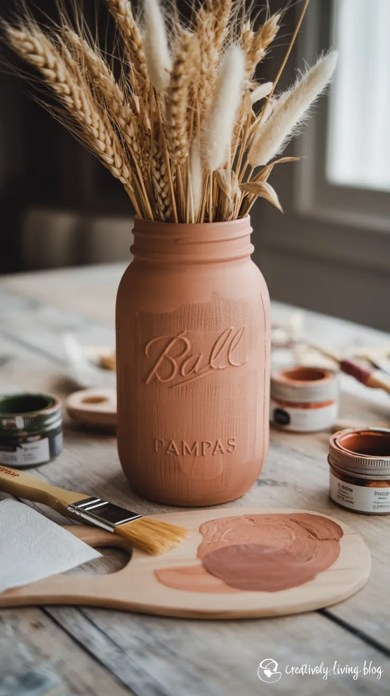
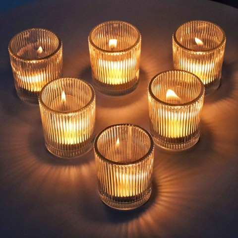
VOHO Clear Votive Candle Holders for Table Centerpiece, Glass Candle Holder
Shop on AmazonWhat Mason Jars Should You Use for Decor?
You don't need one specific type of Mason jar for every project.
Jars come in several styles designed for different purposes, including smooth-sided jars, vintage jars, decorative jars, mini jars, and larger storage jars.
For decorating, I'd choose based on the project.
For flowers: wide-mouth jars work well.
For labels: smooth-sided jars make decorating easier.
For small displays: mini jars create a delicate look.
For pantry decor: larger storage jars create a clean, organized appearance.
For rustic displays: vintage-style jars add character without much effort.
The right jar can make a simple idea look much more polished.
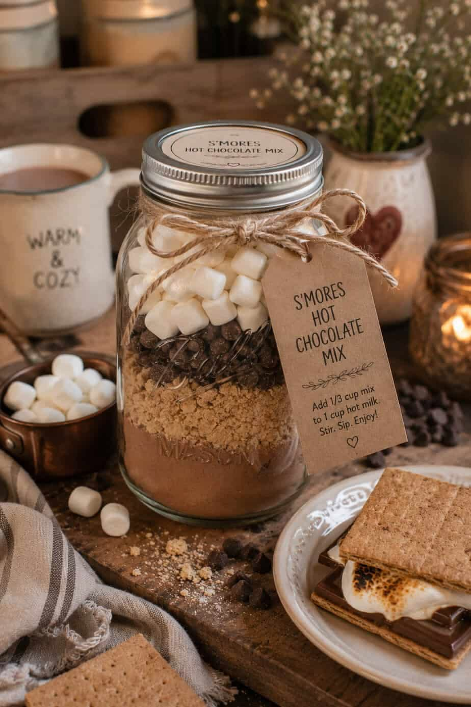
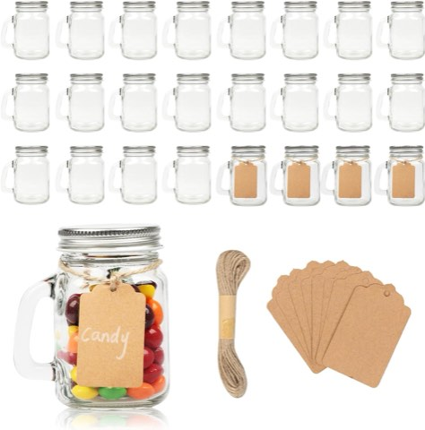
4 oz Small Mason Jar Mugs with Handle, 24 Pack Mini Glass Jars with Airtight Metal Lids
Shop on AmazonHow to Style Mason Jar Decor Without Making It Look Cheap
Mason jars cost very little, but your finished display doesn't have to look inexpensive.
The secret comes down to editing.
Choose one visual direction and stick with it.
If you want farmhouse style, combine glass, wood, linen, and greenery.
If you want a modern look, use clear jars with minimal labels and simple greenery.
For cottage style, add soft flowers and vintage-inspired details.
For a rustic look, introduce natural textures such as jute and weathered wood.
You can also create a more sophisticated display by using jars in different sizes but keeping the colors consistent.
Mix Texture
Glass looks especially good beside materials such as wood, linen, ceramic, metal, and woven baskets.
That contrast gives Mason jar decor more depth.
Leave Some Empty Space
This might sound boring, but empty space helps decorative objects stand out.
You don't need to fill every shelf.
Use Repetition
Repeated shapes create visual rhythm.
Three similar jars often look more intentional than seven completely different containers.
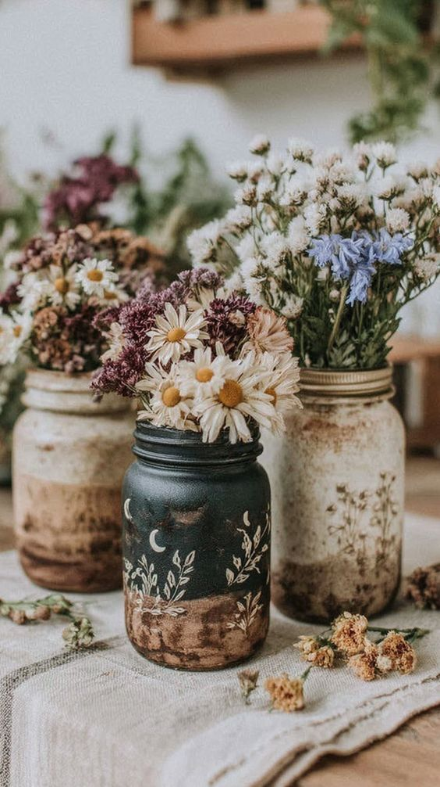
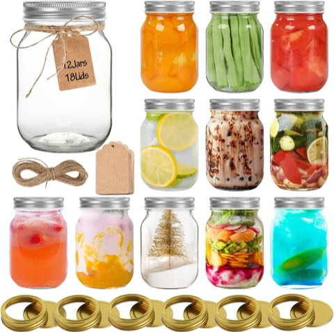
16 oz Wide Mouth Mason Jars 12 Pack, Glass Canning Jars with Airtight Lids
Shop on Amazon15 Mason Jar Decor Ideas for Every Room
1. Mason Jar Gift and Display Jars
Finally, turn your Mason jars into decorative gift containers.
Fill them with homemade treats, bath products, small notes, dried flowers, or other thoughtful items.
One fun concept turns a jar into a "date jar," where a couple collects date-night ideas inside a decorated jar over time.
You can adapt the same idea for birthday gifts, housewarming gifts, wedding favors, teacher gifts, holiday presents, and self-care baskets.
The jar becomes part of the gift instead of something the recipient immediately throws away.
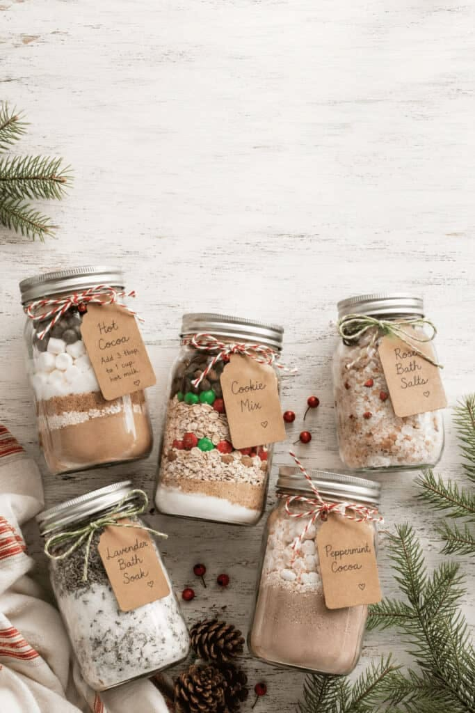
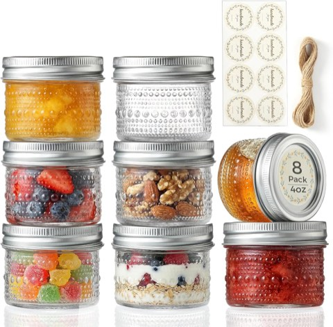
8 Pack Small Glass Jars with Lids, 4oz Vintage Embossed Mini Mason Jars
Shop on Amazon2. Mason Jar Rustic Decor
This is where Mason jars really show off their farmhouse personality.
Combine clear jars with weathered wood, burlap, jute, dried flowers, woven baskets, and vintage-style labels.
Place the arrangement on a reclaimed wooden tray or shelf.
But here's my advice: don't overdo the rustic theme.
One or two rustic details can look charming. Twenty pieces can make your room feel like it accidentally wandered into a farmhouse-themed restaurant.
Let the glass remain the star.
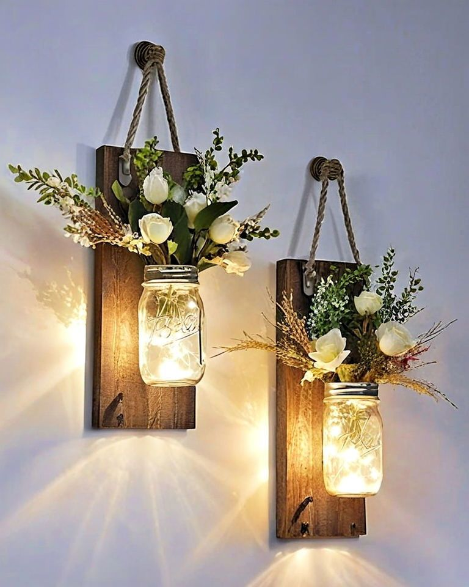
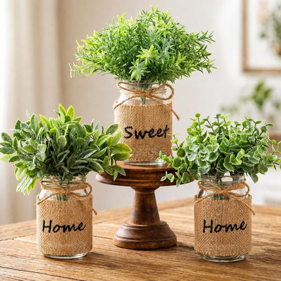
Suncalla 3 Pcs Spring Mason Jar Table Centerpiece, Farmhouse Rustic Burlap Vases
Shop on Amazon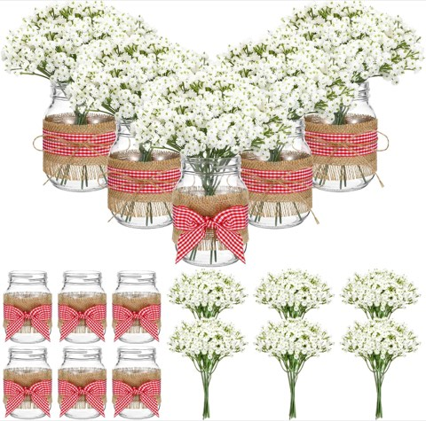
Daifunli 6 Set Picnic Party Centerpieces for Table, Mason Jar Table Decor
Shop on Amazon3. Mason Jar Terrariums
If you want something that feels a little more special, create a tiny terrarium.
A Mason jar can hold a small plant display that brings natural texture to shelves and desks.
Choose plants that suit the environment and avoid overwatering. The closed glass environment can trap moisture quickly.
Succulent terrariums in particular make a nice project for celebrations and party favors, beyond just everyday shelf decor.
I particularly like terrariums on bathroom shelves or home office desks because they add greenery without taking up much space.
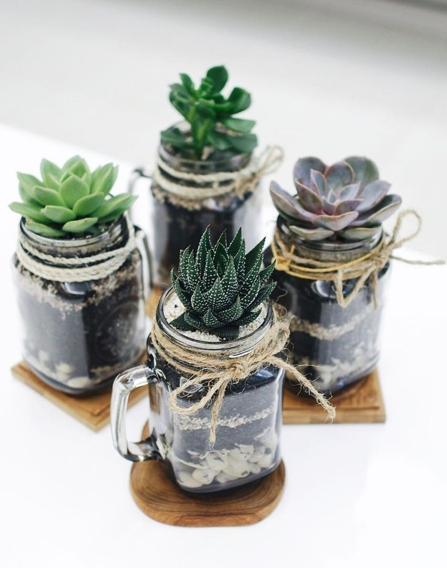
4. Mason Jar Office Organizers
Your home office deserves better than a drawer full of tangled pens.
Use Mason jars to organize pens, pencils, paintbrushes, scissors, rulers, and other small supplies.
I prefer using several jars with different functions rather than dumping everything into one giant container.
Label each jar if you want a more organized appearance.
For a neutral office, use clear glass with simple black lettering. For a creative workspace, add color and playful labels.
Smooth-sided jars work especially well for this, since they're genuinely built for crafting, storage, labeling, and general decor all at once.
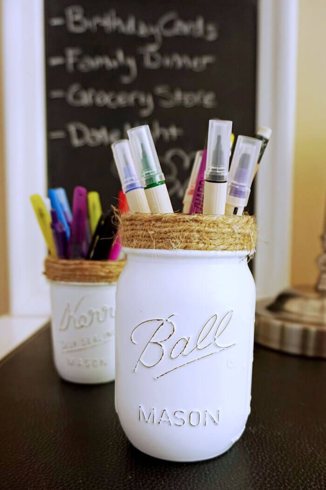
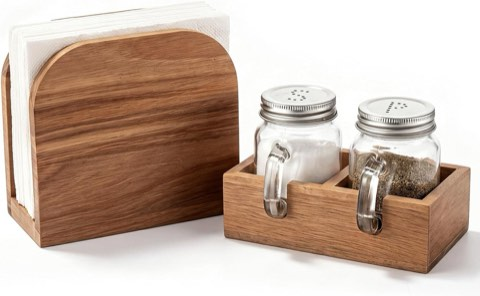
4 Pcs Farmhouse Mason Jar Salt and Pepper Shakers Set, Rustic Napkin Holder
Shop on Amazon5. Mason Jar Seasonal Decor
You don't have to keep your Mason jar decor the same all year.
Change the contents with the seasons.
For spring, use tulips, green branches, soft florals, and pastel ribbons.
For summer, try wildflowers, lemon slices, fresh herbs, and greenery.
For fall, add dried leaves, wheat stems, small branches, and pinecones.
For winter, try evergreen branches, pinecones, battery lights, and small ornaments.
This approach keeps your decor feeling fresh without requiring a complete seasonal makeover.
And yes, your storage closet will appreciate the smaller commitment.
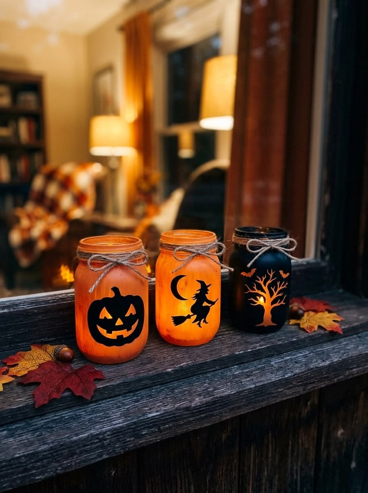
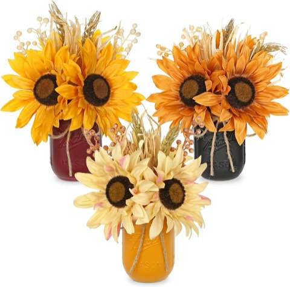
Fall Sunflower Mason Jar Centerpiece, Artificial Autumn Flowers in Rustic Glass Vase
Shop on Amazon6. Mason Jar Fairy Light Decor
Fairy lights and glass jars make an easy combination.
Place a battery-powered string of tiny lights inside a clean jar and let the lights create a soft glow.
Put one on a bookshelf, nightstand, console table, or fireplace mantel.
The transparent glass catches the light beautifully, especially in the evening.
I like using warm-white lights rather than colorful ones because they create a calmer appearance.
For a more finished display, place two or three jars together and vary their heights.
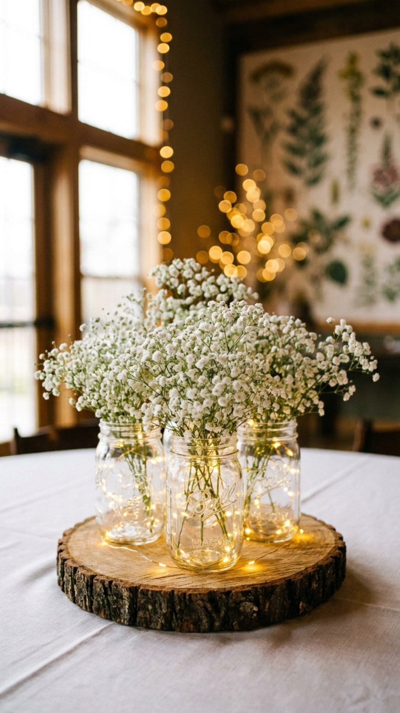
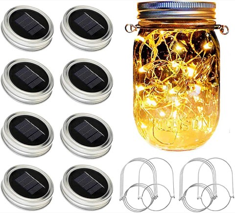
SunKite Solar Mason Jar Lights, 8 Pack 20 LED Waterproof Fairy Firefly Lids
Shop on Amazon7. Mason Jar Wall Decor
Who says Mason jars have to sit on a table?
Attach jars securely to a suitable wall-mounted holder and turn them into small hanging displays.
You can use them for flowers, greenery, craft supplies, or small decorative objects.
This idea works especially well in entryways, kitchens, craft rooms, laundry rooms, and home offices.
I would keep the arrangement symmetrical if you want a clean look. Use an uneven arrangement if you prefer something more relaxed and eclectic.
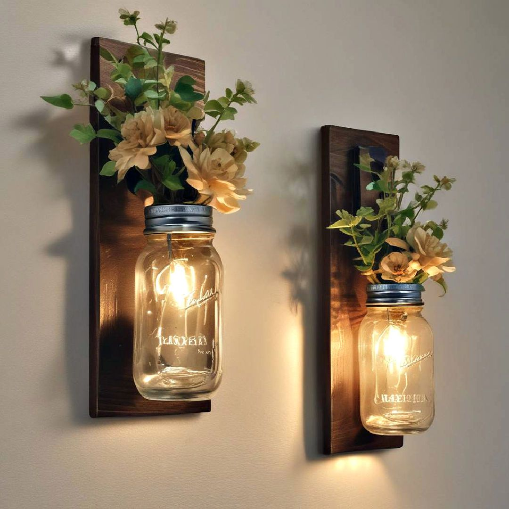
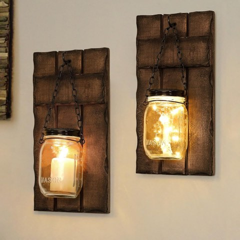
Wall Candle Sconces Set of 2, Farmhouse Mounted Wooden Candle Holders with Lights
Shop on Amazon8. Mason Jar Centerpiece Ideas
A Mason jar centerpiece doesn't need to look like something from a country wedding.
That's the beauty of keeping the styling simple.
Place several jars on a long wooden tray and fill them with fresh greenery, dried flowers, small branches, seasonal stems, or candles.
For a dining table, I prefer three to five smaller jars rather than one oversized arrangement.
Grouping centerpieces with layered table details creates a genuinely inviting dining experience, and a few Mason jar vases add exactly the earthy element that pulls a tablescape together.
Keep the jars low enough that people can still see across the table.
Nobody wants to conduct an entire dinner conversation through a forest of flowers.
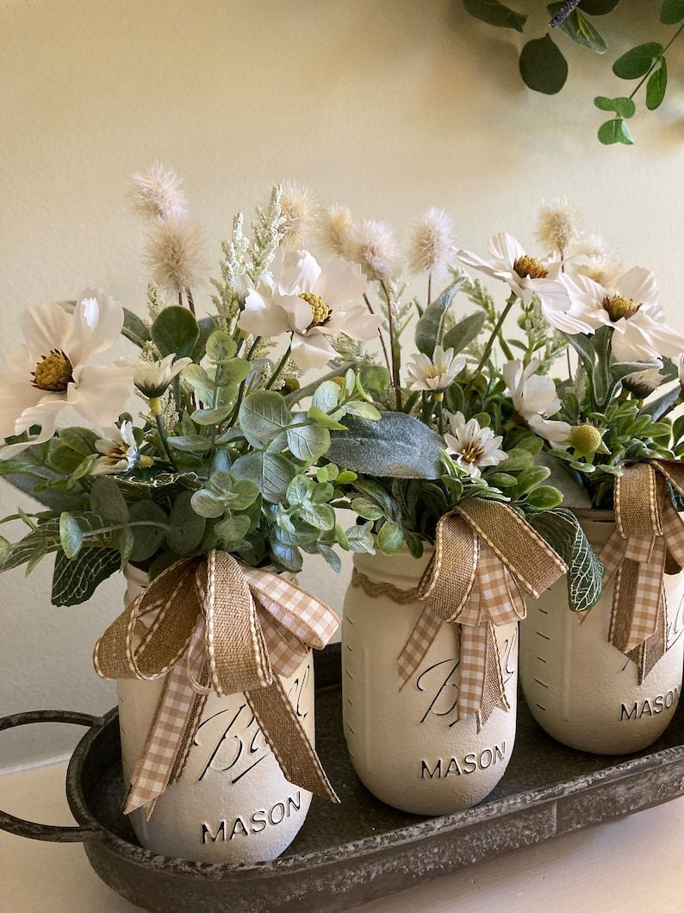
9. Mason Jar Hanging Planters
Take your Mason jar plants off the counter and hang them instead.
You can create a small vertical display using sturdy hanging hardware and suitable planters.
This works particularly well near kitchen windows, covered patios, balconies, or sunny breakfast areas.
I'd keep the plants small and use the same jar style throughout the display.
Why? Because repetition makes a DIY project look intentional.
You can also mix herbs with trailing plants for a softer effect.
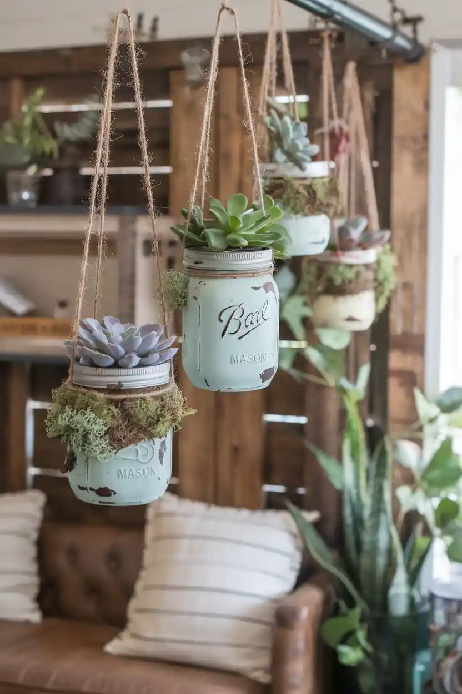
10. Mason Jar Kitchen Storage
This one makes perfect sense because Mason jars already have a long history in the kitchen.
Use them for dry ingredients such as pasta, rice, oats, flour, coffee, dried beans, and baking ingredients.
Plenty of storage jars are made specifically for pantry organization and decorative display, built to showcase ingredients while keeping the space genuinely organized.
I love this idea for open shelving because the ingredients become part of the visual display.
A row of matching jars looks much better than ten mismatched plastic packages fighting for attention.
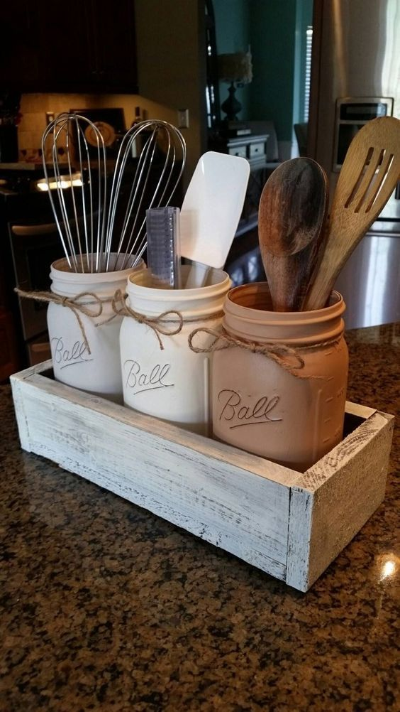
11. Mason Jar Bathroom Organizers
Mason jars can make surprisingly good bathroom storage.
Use them to organize cotton balls, cotton swabs, bath salts, makeup brushes, toothbrushes, or small toiletries.
Clear glass works particularly well because you can see everything quickly.
I'd pair the jars with a wooden or ceramic tray. That single step makes the setup look more intentional.
Bathroom organization is actually one of the more common creative uses for a plain Mason jar.
If your bathroom already has plenty of visual clutter, choose jars with simple labels and keep the contents neatly arranged.
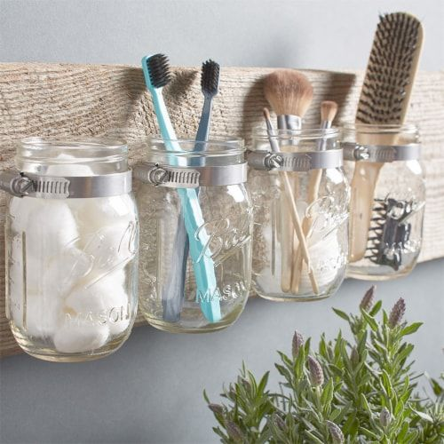
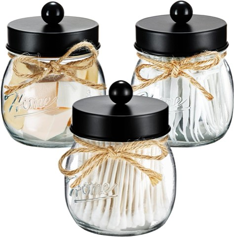
SheeChung 3 Pack Glass Mason Jar Qtip Holder, Black Stainless Steel Lids
Shop on Amazon12. Mason Jar Herb Planters
Your kitchen counter can get a little greenery without turning into a greenhouse.
Use small Mason jars to grow or display herbs such as basil, mint, parsley, or thyme.
I like this idea because the plants become both decor and something useful.
Place three small jars together near a sunny window. Add simple handwritten labels for each herb.
If you want a more finished look, put the jars inside a shallow wooden tray.
Just remember that Mason jars don't automatically provide drainage. Use an appropriate planting setup rather than letting excess water sit around the roots.
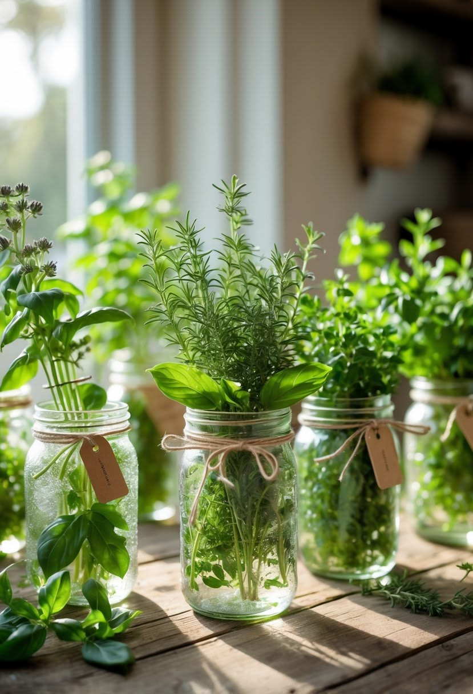
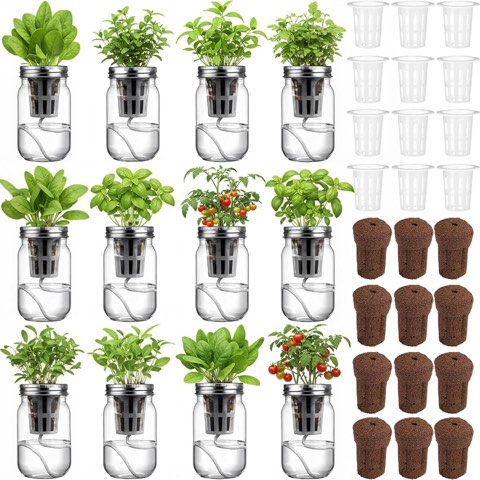
Teenyyou Hydroponic Garden Mason Jar Kit, Self Watering Herb Planter Starter Kit, 12 Set
Shop on Amazon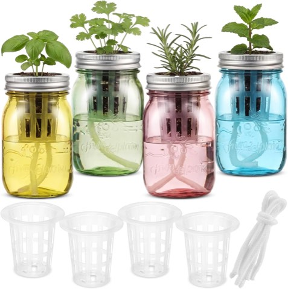
Colored Hydroponic Mason Garden Jar Bulk 16 oz, Self Watering Herb Planter Kit, 4 Set
Shop on Amazon13. Mason Jar Candle Holders
This might be one of my favorite Mason jar decor ideas for evenings.
Place a candle inside a Mason jar and let the glass soften the light. Add a little sand, small stones, or decorative filler around the base if you want extra texture.
For outdoor dinners, use several jars along the center of the table.
Empty glass jars make genuinely glowing votives, and grouping jars at different heights adds real visual interest to the whole arrangement.
For safety, choose candles that fit securely inside the jar and never leave an open flame unattended.
Want an even easier version? Use battery-powered LED tea lights.
No wax. No smoke. No frantic search for a fire extinguisher.
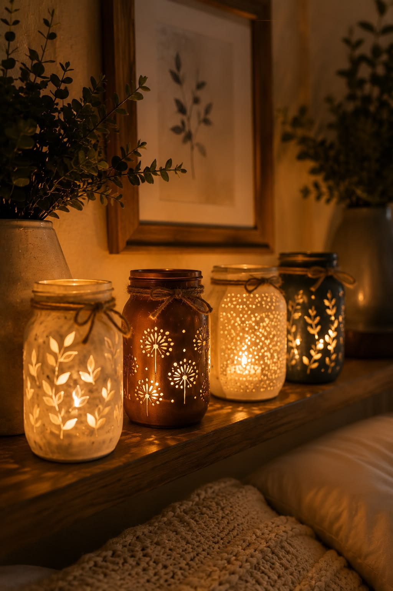
14. Painted Mason Jar Decor
Want something a little more colorful?
Paint your Mason jars.
You can use chalk paint for a farmhouse appearance, soft beige for a neutral room, muted green for a cottage feel, or black for a more modern look.
I prefer painting only the outside and leaving some of the original glass visible. That small detail keeps the jar from looking too heavy.
Try grouping three painted jars together and placing them on a wooden tray.
A simple color combination worth trying: cream, warm beige, and muted sage green. These colors work beautifully with natural wood and woven textures.
Just remember that you don't need to paint every inch of the jar. Sometimes a little glass showing through makes the whole project look more polished.
Fall Mason Jar Centerpiece for Table, Fall Decorations for Home
Shop on AmazonTioncy 12 Set Decorative Mason Jar with Light for Table Centerpiece, Gold
Shop on Amazon15. Mason Jar Flower Vases
Let's end with the obvious one because honestly, it works.
Turn Mason jars into simple flower vases by filling them with fresh flowers, dried stems, eucalyptus, baby's breath, or whatever greenery you can find.
I especially like using three jars at different heights rather than placing one large vase in the middle of a table. The variation creates more movement and makes the arrangement feel casual.
For a farmhouse look, wrap a small piece of jute around the neck. For a cleaner style, skip the ribbon completely.
For everyday decorating, I'd choose seasonal greenery over expensive flowers. Your wallet will thank you.
Mason jar vases have an earthy, slightly homespun feel that fits almost any casual tablescape.
6 Inch Rustic Metal Mason Jar Vase Centerpiece for Table, White, 2 Pcs
Shop on Amazon6 Pcs Clear Mason Jar Glass Flower Vases for Centerpieces
Shop on AmazonHow to Make Mason Jar Decor Look Stylish Instead of Cluttered
Here's the biggest mistake I see with Mason jar decorating: using too many ideas at once.
You don't need six painted jars, three ribbons, artificial flowers, wooden signs, and a handful of beads sitting on one shelf. Your Mason jars should complement the room rather than announce that you discovered a craft store.
I prefer a simple color palette and repeated materials.
For example, combine clear glass with natural wood, linen, jute or cotton twine, dried greenery, soft neutral paint, and brass or black metal accents.
Grouping jars together and adding natural elements like flowers, grasses, or herbs is a reliable way to build that collected look.
That approach creates a more collected look instead of a random collection of craft projects.
Mason Jars 32 oz, 12 Pack Large Wide Mouth Mason Jar with Airtight Lids and Bands
Shop on AmazonComSaf Regular Mouth 12 oz Mason Jars, 6 Pack Glass Jars with Lids
Shop on AmazonAre Mason Jars Actually Good for Decorating?
Absolutely, but the trick involves choosing the right jar for the job.
Jars made specifically for crafting, storage, decorating, and labeling all behave a little differently. Smooth-sided jars, for example, work particularly well when you want to add labels or decorative details.
For decor, I usually look for clear glass for a clean and classic look, vintage-style jars for farmhouse and cottage spaces, wide-mouth jars for flowers, plants, and larger decorative objects, small jars for shelves, trays, and tiny displays, and smooth-sided jars when I want to paint, label, or customize them.
Ever notice how the simplest decorating projects often look the most intentional? Mason jars make that surprisingly easy.
Why Mason Jars Work So Well as Home Decor
Mason jars bring a relaxed, slightly nostalgic look that works with surprisingly many decorating styles. They can look rustic with twine and dried flowers, modern with a simple white finish, or soft and romantic with candles and delicate greenery.
I especially like them because the glass lets the contents become part of the decoration. Instead of hiding everything inside a container, you can turn whatever sits inside the jar into a visual detail.
That makes Mason jars particularly useful in kitchens, bathrooms, bedrooms, entryways, home offices, and dining rooms.
Final Thoughts on Mason Jar Decor Ideas
The best Mason jar decor ideas don't require complicated DIY skills.
A simple jar with fresh greenery can brighten a kitchen. A few jars with candles can warm up a dining table on a quiet evening. Painted jars can add color to a shelf, while clear jars can organize your bathroom or office just as easily.
What I like most about Mason jars comes down to their sheer flexibility. You can make them rustic, modern, cottage-inspired, seasonal, functional, or completely personal depending on the day.
And you genuinely don't need to spend a fortune at all to make any of them work.
Start with one jar. Try flowers, greenery, storage, or candles. See how it looks in your space.
Then, if you find yourself staring at every single empty jar in the kitchen thinking, "I could decorate that," congratulations. You've officially and permanently caught the Mason jar bug.